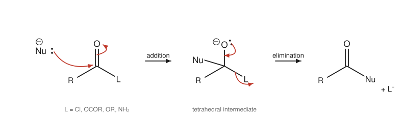
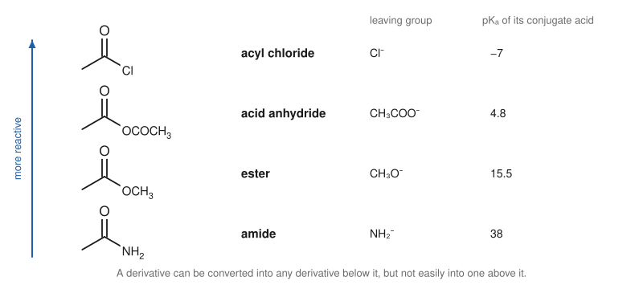

Chapter 12: Carboxylic Acids and Their Derivatives¶
Acidity and nucleophilic acyl substitution
Vinegar owes its sourness to ethanoic acid, the sting of an ant to methanoic acid, and the smell of rancid butter to butanoic acid. Carboxylic acids and the compounds derived from them, acyl chlorides, anhydrides, esters, amides and nitriles, form one of the largest and most useful families in organic chemistry. Esters give fruits their scents and fats their structure; amides hold proteins together; polyesters and polyamides are among our most important materials. The members of the family are linked by one reaction type, nucleophilic acyl substitution, in which one group on the carbonyl carbon is replaced by another. This chapter explains the acidity of carboxylic acids, the mechanism of acyl substitution, and the reactivity order that tells you which derivative can be turned into which.
Learning outcomes
By the end of this chapter you should be able to:
- explain the physical properties and acidity of carboxylic acids, and the effect of substituents on acidity;
- list ways of making carboxylic acids;
- write the addition–elimination mechanism of nucleophilic acyl substitution and explain how it differs from nucleophilic addition to aldehydes and ketones;
- rank the acid derivatives by reactivity and use the order to plan interconversions;
- write the mechanism of Fischer esterification and of ester hydrolysis in acid and in base;
- predict the products of reactions of acyl chlorides, anhydrides, esters, amides and nitriles with water, alcohols, amines, hydride reagents and Grignard reagents.
12.1 Carboxylic acids: structure and properties¶
The carboxyl group, –COOH, combines a carbonyl group and a hydroxyl group on the same carbon. The carbon is sp² and the group is planar. Naming was covered in Section 2.4: the acid is named from the alkane with -oic acid, counting the COOH carbon as C1.
Carboxylic acids are strongly hydrogen bonded. In the pure liquid and in non-polar solvents they form dimers, pairs of molecules held together by two hydrogen bonds. As a result they have high boiling points: ethanoic acid (60 g mol⁻¹) boils at 118 °C, higher than propan-1-ol (97 °C). The first four acids mix with water completely; solubility then falls with chain length, and the long-chain fatty acids such as hexadecanoic acid (palmitic acid) are insoluble.
Acidity¶
Carboxylic acids are weak acids, with pKa values typically between 4 and 5, but they are much stronger than alcohols (pKa 16) or phenols (pKa 10). The reason is the resonance stabilisation of the carboxylate ion, in which the negative charge is shared equally between two oxygen atoms (Figure 1.4, Section 4.4).
| Acid | Formula | pKa |
|---|---|---|
| methanoic acid | HCOOH | 3.75 |
| ethanoic acid | CH₃COOH | 4.76 |
| propanoic acid | CH₃CH₂COOH | 4.87 |
| chloroethanoic acid | ClCH₂COOH | 2.86 |
| trichloroethanoic acid | Cl₃CCOOH | 0.65 |
| benzoic acid | C₆H₅COOH | 4.20 |
Table 12.1. Acidities of some carboxylic acids. Electron-withdrawing groups near the carboxyl group increase acidity by the inductive effect.
Carboxylic acids react with strong bases (NaOH) and even with weak bases such as sodium hydrogencarbonate, giving water-soluble carboxylate salts:
The fizzing of carbon dioxide with sodium hydrogencarbonate is a simple test for a carboxylic acid; phenols and alcohols are too weakly acidic to give it. Sodium and potassium salts of long-chain fatty acids are soaps (Section 12.5).
Making carboxylic acids¶
- Oxidation of primary alcohols or aldehydes (Section 10.5), or of alkyl side chains on a benzene ring with hot KMnO₄ (Section 8.6).
- Carboxylation of Grignard reagents: RMgX + CO₂, then H₃O⁺, gives RCOOH, adding one carbon to the chain (Table 11.1).
- Hydrolysis of nitriles: R–C≡N heated with aqueous acid or base gives RCOOH (Section 12.7). Since nitriles are made from haloalkanes and cyanide by SN2, this is another way to add one carbon.
- Hydrolysis of esters, amides and other derivatives (Sections 12.5 and 12.6).
12.2 Nucleophilic acyl substitution¶
An acyl group is R–C=O. Carboxylic acid derivatives all have the form R–CO–L, where L is a group attached to the acyl carbon through an electronegative atom: Cl (acyl chloride), OCOR (anhydride), OR′ (ester), NH₂ (amide) or OH (the acid itself).
When a nucleophile attacks the carbonyl carbon of an aldehyde or ketone, the tetrahedral alkoxide intermediate has no good leaving group, so it is simply protonated: the result is addition. When the carbonyl carbon carries a group L that can leave, the tetrahedral intermediate collapses instead: the oxygen lone pair re-forms the C=O bond and L is expelled. The overall result is substitution of L by the nucleophile. The mechanism has two steps, addition then elimination:

Caution: not an SN2 reaction
Acyl substitution does not occur by a one-step backside attack like SN2. The sp² carbonyl carbon is first attacked to form a tetrahedral intermediate, and only then does the leaving group leave. Always draw the tetrahedral intermediate.
The reactivity order¶
How readily a derivative undergoes acyl substitution depends on two related factors:
- The leaving group. The weaker the base L⁻, the better it leaves. Cl⁻ (conjugate base of HCl, pKa −7) is an excellent leaving group; NH₂⁻ (conjugate base of NH₃, pKa 38) is a very poor one.
- Resonance donation by L. A lone pair on L can be shared with the carbonyl group (L–C=O ↔ L⁺=C–O⁻). This makes the carbonyl carbon less electrophilic and the derivative more stable. Nitrogen donates strongly (amides are very stable), oxygen less so, and chlorine, whose 3p lone pairs overlap poorly with carbon's 2p orbital, hardly at all.
Both factors give the same order:

Key idea
You can travel down the reactivity ladder by acyl substitution, but not up. An acyl chloride can be converted into an anhydride, an ester or an amide; an ester into an amide; but an amide cannot be turned directly into an ester or an acyl chloride. To go up, first hydrolyse to the carboxylic acid, then activate it (for example with SOCl₂).
12.3 Reactions of carboxylic acids¶
Conversion into acyl chlorides. Thionyl chloride, SOCl₂, converts a carboxylic acid into the acyl chloride, with sulfur dioxide and hydrogen chloride as gaseous by-products:
This is the usual way to climb the reactivity ladder.
Fischer esterification. A carboxylic acid and an alcohol, heated with a little concentrated sulfuric acid as catalyst, give an ester and water:
The mechanism is acid-catalysed acyl substitution:
- The carbonyl oxygen of the acid is protonated, making the carbonyl carbon more electrophilic.
- The alcohol oxygen attacks the carbonyl carbon, giving a tetrahedral intermediate.
- A proton moves from the newly attached oxygen to one of the OH groups.
- Water leaves, and the C=O bond re-forms (still protonated).
- Loss of a proton gives the ester and regenerates the catalyst.
Every step is reversible, and the equilibrium constant is close to 1 for many simple acids and alcohols. To get a good yield, one reactant (usually the cheaper alcohol) is used in excess, or water is removed as it forms (Le Chatelier's principle). Experiments with alcohol labelled with oxygen-18 show that the label ends up in the ester, not in the water, confirming that the C–O bond of the acid, not of the alcohol, is broken.
Reduction. LiAlH₄ reduces carboxylic acids to primary alcohols: CH₃COOH → CH₃CH₂OH. NaBH₄ is not strong enough.
Amide formation. Heating an acid with an amine first gives an ammonium carboxylate salt (an acid–base reaction), which loses water only on strong heating. In practice amides are made from more reactive derivatives, or by using a "coupling reagent" that activates the acid, the method used to join amino acids into peptides.
12.4 Acyl chlorides and acid anhydrides¶
Acyl chlorides (acid chlorides) are the most reactive derivatives. They react vigorously at room temperature with water, alcohols and amines, releasing hydrogen chloride (they fume in moist air):
- with water: CH₃COCl + H₂O → CH₃COOH + HCl
- with an alcohol: CH₃COCl + CH₃CH₂OH → CH₃COOCH₂CH₃ + HCl
- with ammonia or an amine (two equivalents, one to neutralise the HCl): CH₃COCl + 2 NH₃ → CH₃CONH₂ + NH₄Cl
They also acylate benzene in the Friedel–Crafts reaction (Section 8.4). Because these reactions are fast and irreversible, acyl chlorides give much better yields of esters than Fischer esterification, but they are corrosive and lachrymatory and must be handled in a fume cupboard.
Acid anhydrides, (RCO)₂O, react in the same ways, more gently, releasing a carboxylic acid instead of HCl. Ethanoic anhydride is used industrially and in teaching laboratories to make aspirin (2-acetoxybenzoic acid) by acylating the OH group of 2-hydroxybenzoic acid (salicylic acid), with a little acid as catalyst:
Anhydrides are preferred to acyl chlorides on a large scale because they are cheaper, less corrosive and do not release HCl.
12.5 Esters¶
Esters are common in nature and industry. Many have pleasant, fruity smells and are used as flavourings: ethyl ethanoate is a fruity-smelling solvent used in some nail-polish removers, and 3-methylbutyl ethanoate smells of bananas. Fats and oils are esters of glycerol (Chapter 15). Polyesters are important fibres and plastics.
Esters cannot hydrogen bond to one another, so they boil lower than acids of similar mass, close to the corresponding ketones.
Hydrolysis¶
Esters are hydrolysed back to the acid and alcohol in two ways.
Acid-catalysed hydrolysis is the exact reverse of Fischer esterification, with the same intermediates. A large excess of water drives the equilibrium towards the acid and alcohol. It is reversible.
Base-promoted hydrolysis (saponification). Heating an ester with aqueous sodium hydroxide gives the carboxylate salt and the alcohol:
The mechanism is acyl substitution: hydroxide adds to the carbonyl carbon, the tetrahedral intermediate expels the alkoxide ion, and the alkoxide immediately takes a proton from the carboxylic acid just formed. This last step, an acid–base reaction with a very large equilibrium constant, makes saponification irreversible, and it consumes a full equivalent of hydroxide, which is why base "promotes" rather than catalyses the reaction. Acidifying the mixture afterwards gives the free carboxylic acid.
The name comes from soap-making: boiling fats with sodium hydroxide hydrolyses their ester groups, giving glycerol and the sodium salts of fatty acids, which are soaps. A soap molecule has a long, non-polar hydrocarbon tail and an ionic carboxylate head. In water, soap molecules gather into micelles, spheres with the tails inside and the heads facing the water, which can hold droplets of grease in their oily core and carry them away.
Other reactions of esters¶
- With amines: esters react with ammonia or amines to give amides (moving down the ladder).
- Transesterification: an ester heated with a different alcohol and an acid or base catalyst exchanges its alkoxy group. Biodiesel is made by transesterifying vegetable oils with methanol.
- Reduction: LiAlH₄ reduces an ester to two alcohols: RCOOR′ → RCH₂OH + R′OH.
- Grignard reagents add twice: the first equivalent substitutes the OR′ group to give a ketone, which is more reactive than the ester and immediately adds a second equivalent. The product, after acid work-up, is a tertiary alcohol with two identical groups from the Grignard reagent: CH₃COOCH₃ + 2 CH₃MgBr → (CH₃)₃COH.
12.6 Amides¶
Amides are the least reactive of the neutral derivatives. The nitrogen lone pair is strongly delocalised onto the carbonyl oxygen, which has three consequences:
- The C–N bond has partial double-bond character, so rotation about it is restricted and the amide group (O=C–N with its attached atoms) is planar.
- The nitrogen is not basic (Section 4.5): its lone pair is not available to accept a proton.
- The carbonyl carbon is only weakly electrophilic, so amides are hard to hydrolyse.
These properties make the amide link, called the peptide bond in proteins, an ideal stable connector for the molecules of life (Chapter 15). The planarity of each peptide bond shapes the folding of proteins.
Amides are hydrolysed only by prolonged heating with strong aqueous acid (giving the carboxylic acid and an ammonium salt) or strong base (giving the carboxylate and the amine or ammonia). Primary amides (RCONH₂) form strong hydrogen bonds and are usually solids; ethanamide melts at about 80 °C.
Reduction of an amide with LiAlH₄ converts the C=O group into CH₂, giving an amine: CH₃CONH₂ → CH₃CH₂NH₂. This is a useful way of making amines (Chapter 13).
12.7 Nitriles¶
Nitriles, R–C≡N, contain a carbon at the same oxidation level as a carboxylic acid, and they are usually grouped with the acid derivatives. The C≡N carbon is electrophilic, like a carbonyl carbon. Nitriles are made by SN2 reaction of cyanide ion with primary or secondary haloalkanes (Section 9.2) or from amides by dehydration.
- Hydrolysis with hot aqueous acid or base gives first an amide and then the carboxylic acid (or its salt): CH₃CH₂CN → CH₃CH₂COOH.
- Reduction with LiAlH₄ (or with hydrogen and a catalyst) gives a primary amine with one more carbon than the haloalkane used to make the nitrile: CH₃CH₂CN → CH₃CH₂CH₂NH₂.
Example 12.1: Adding one carbon
Show two ways of making butanoic acid from 1-bromopropane.
(a) Via a nitrile: CH₃CH₂CH₂Br + NaCN (SN2, in DMSO) → CH₃CH₂CH₂CN; then hot aqueous acid → CH₃CH₂CH₂COOH.
(b) Via a Grignard reagent: CH₃CH₂CH₂Br + Mg (dry ether) → CH₃CH₂CH₂MgBr; then CO₂, then H₃O⁺ → CH₃CH₂CH₂COOH.
Route (b) is preferred when the halide is tertiary (SN2 would fail); route (a) when the molecule contains groups that would destroy a Grignard reagent (such as OH or C=O).
Example 12.2: Choosing a derivative
Plan the synthesis of N-ethylethanamide, CH₃CONHCH₂CH₃, from ethanoic acid.
Amides lie at the bottom of the ladder, so they can be made from any more reactive derivative. Convert ethanoic acid into ethanoyl chloride with SOCl₂, then add two equivalents of ethanamine (one forms the amide, the other takes up the HCl as ethylammonium chloride): CH₃COCl + 2 CH₃CH₂NH₂ → CH₃CONHCH₂CH₃ + CH₃CH₂NH₃⁺Cl⁻.
12.8 Summary¶
Summary
- Carboxylic acids form hydrogen-bonded dimers and are weak acids (pKa 4 to 5) because the carboxylate ion is resonance-stabilised; electron-withdrawing groups increase acidity. They release CO₂ from NaHCO₃.
- Acids are made by oxidation, carboxylation of Grignard reagents and hydrolysis of nitriles and other derivatives.
- Acid derivatives react by nucleophilic acyl substitution: addition to give a tetrahedral intermediate, then elimination of the leaving group.
- Reactivity: acyl chloride > anhydride > ester ≈ acid > amide. Conversions run downhill.
- Fischer esterification is acid-catalysed and reversible; saponification (base hydrolysis of esters) is irreversible and makes soap from fats.
- LiAlH₄ reduces acids and esters to primary alcohols, amides to amines and nitriles to primary amines. Grignard reagents add twice to esters, giving tertiary alcohols.
- Amides are planar, non-basic and hard to hydrolyse: ideal for peptide bonds.
12.9 Exercises¶
Exercise 1
Explain why ethanoic acid (bp 118 °C) boils higher than propan-1-ol (bp 97 °C), although their molar masses are equal.
Answer
Ethanoic acid molecules form cyclic dimers held by two strong hydrogen bonds, and in the liquid they hydrogen bond extensively through both the C=O and the O–H groups. The carboxyl group is also more polar than an alcohol group. More energy is needed to separate the molecules, so the boiling point is higher.
Exercise 2
Arrange in order of increasing acidity, and explain: ethanoic acid, 2,2-dichloroethanoic acid, ethanol, 2-chloroethanoic acid, phenol.
Answer
Ethanol (16) < phenol (10) < ethanoic acid (4.76) < 2-chloroethanoic acid (2.86) < 2,2-dichloroethanoic acid (1.29). Phenoxide is stabilised by resonance into the ring; carboxylate by resonance over two oxygens; each chlorine adds an inductive withdrawal that stabilises the carboxylate further.
Exercise 3
Write the mechanism for the saponification of methyl ethanoate with sodium hydroxide, and explain why the reaction goes to completion.
Answer
(1) Hydroxide attacks the carbonyl carbon; the π electrons move onto oxygen, giving a tetrahedral intermediate. (2) The oxygen lone pair re-forms the C=O bond and methoxide is expelled, giving ethanoic acid. (3) Methoxide (or hydroxide) removes the acidic proton from ethanoic acid, giving ethanoate and methanol. Step 3 is an acid–base reaction with an equilibrium constant of about 10¹¹ (pKa 4.8 against about 15.5), so it pulls the whole sequence to completion; the carboxylate ion is far too unreactive to be attacked by methanol.
Exercise 4
Give the products when ethanoyl chloride reacts with: (a) water; (b) propan-1-ol; (c) excess dimethylamine, (CH₃)₂NH; (d) benzene with AlCl₃.
Answer
(a) Ethanoic acid + HCl. (b) Propyl ethanoate + HCl. (c) N,N-dimethylethanamide, CH₃CON(CH₃)₂, + dimethylammonium chloride. (d) 1-Phenylethanone (acetophenone), C₆H₅COCH₃, + HCl.
Exercise 5
How would you make (a) ethyl benzoate from benzoic acid by two different routes; (b) 2-phenylpropan-2-ol from ethyl benzoate?
Answer
(a) Route 1: Fischer esterification with excess ethanol and a catalytic amount of concentrated H₂SO₄, heated under reflux. Route 2: convert benzoic acid into benzoyl chloride with SOCl₂, then react with ethanol (with a base such as pyridine to take up HCl); this route is not an equilibrium and gives a higher yield.
(b) Add two equivalents of methylmagnesium bromide, then acid work-up. The first equivalent converts the ester into 1-phenylethanone, which adds the second methyl group, giving (CH₃)₂C(OH)C₆H₅.
Exercise 6
Give the products of LiAlH₄ reduction (followed by water) of: (a) methyl propanoate; (b) N-methylethanamide; (c) butanenitrile; (d) propanoic acid.
Answer
(a) Propan-1-ol and methanol. (b) N-Ethylmethanamine, CH₃CH₂NHCH₃ (the C=O becomes CH₂). (c) Butan-1-amine, CH₃CH₂CH₂CH₂NH₂. (d) Propan-1-ol.
Exercise 7
Explain why amides are much less basic than amines and why the C–N bond of an amide does not rotate freely at room temperature.
Answer
In an amide the nitrogen lone pair is delocalised onto the carbonyl oxygen by resonance (O=C–NH₂ ↔ ⁻O–C=NH₂⁺). The lone pair is therefore much less available to bond to a proton, so amides are very weak bases (the pKa of a protonated amide is about −0.5, compared with about 10.6 for a protonated amine; amides are in fact protonated on oxygen). The same resonance gives the C–N bond partial double-bond character, so rotating about it would destroy the overlap of the nitrogen p orbital with the C=O π system; this costs enough energy to make rotation slow at room temperature.
12.10 Quiz¶
Check your understanding of carboxylic acids and derivatives
Exercise 1
Which derivative is the most reactive towards nucleophilic acyl substitution?
- amide
- ester
- acid anhydride
- acyl chloride
Answer
acyl chloride
Exercise 2
Which reagent converts a carboxylic acid into an acyl chloride?
- SOCl₂
- HCl
- NaCl
- Cl₂ with light
Answer
SOCl₂
Exercise 3
Saponification is the hydrolysis of an ester by
- dilute acid
- aqueous sodium hydroxide
- water alone
- LiAlH₄
Answer
aqueous sodium hydroxide
Exercise 4
Name the ester formed from ethanoic acid and methanol.
Answer
methyl ethanoate / methyl acetate
Exercise 5
Which observation shows that a compound is a carboxylic acid rather than a phenol?
- it dissolves in NaOH
- it fizzes with NaHCO₃
- it decolourises bromine water
- it gives a silver mirror
Answer
it fizzes with NaHCO₃
Exercise 6
Reduction of an amide with LiAlH₄ gives
- an alcohol
- an amine
- a carboxylic acid
- a nitrile
Answer
an amine
Exercise 7
The mechanism of nucleophilic acyl substitution is best described as
- a one-step SN2
- addition then elimination
- elimination then addition
- a radical chain
Answer
addition then elimination